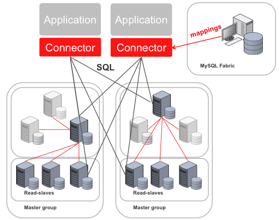

mysql fabric [01] 简介
Fabric 简介
MySQL Fabric 是一个用于管理 MySQL 服务器群的可扩展框架。该框架实现了两个特性高可用性
(high availablity)使用数据分片的横向扩展(sharding)这两个特性既可以单独使用，也可以结合使用。
这两个特性都基于以下两个层面实现：

mysqlfabric 是处理任何管理请求的进程。使用 HA特性时，还可以让此进程负责监视主服务器并在发生故障时,开始故障转移，将从服务器升级成主服务器。MySQL Fabric-aware 连接器把从 MySQL Fabric 获取的路由信息存储到缓存中，然后凭借该信息将事务或查询发送给正确的 MySQL 服务器。
高可用性
HA 组由两个或更多个 MySQL 服务器组成；任何时刻，其中都有一台服务器作为主服务器（MySQL复制功能的主服务器），其他服务器则作为从服务器（MySQL 复制功能的从服务器）。HA组的作用就是确保该组中保存的数据始终可访问。MySQL 的复制功能可通过复制来确保数据安全，MySQL Fabric 的高可用性解决方案在此基础上提供了两个必不可少的额外要素：
故障检测和升级 — MySQL Fabric 监视 HA 组中的主服务器，在主服务器发生故障时选择一个从服务器并将其升级为主服务器数据库请求路由 — 将写入请求路由到主服务器以及将读取请求在各个从服务器之间进行负载均衡的操作对应用是透明的，即使在故障转移期间拓扑发生变化时也是如此
分片 — 横向扩展
当接近一个 MySQL 服务器（或 HA 组）的容量或写入性能极限时，MySQL Fabric 可在多个 MySQL服务器“组”中对数据进行分区，从而支持数据库服务器横向扩展。请注意，一个组可以只包含一个 MySQL 服务器，也可以是一个 HA 组。管理员定义这些服务器之间的数据分片方式；指定应将哪些表的列用作分片键，以及是使用 HASH 映射还是 RANGE 映射将这些键映射至正确的分片, 如果需要进一步分片，MySQL Fabric 可以拆分现有分片；此外，还可以重新分配分片。
MySQL Fabric-aware 连接器
目前，提供了针对 Java 的、PHP 的和 Python 的 MySQL Fabric-aware 连接器。这些连接器自动从 MySQL Fabric 获取路由信息并将其存储在缓存中，以便将查询和事务直接路由至正确的 MySQL 服务器。应用只需提供分片键即可，无需了解服务器场的拓扑或任何服务器的状态。
无代理运行
因为事务和查询直接路由至正确的 MySQL 服务器，因此并不需要代理功能—有助于减少延迟和降低复杂性。此外，任何目标机器上都不需要运行代理。